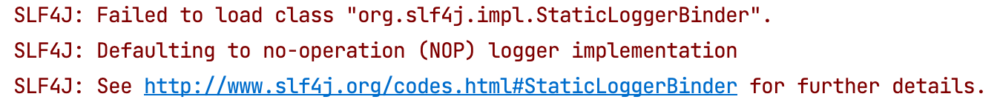
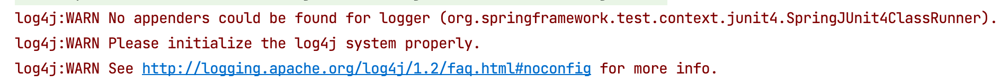
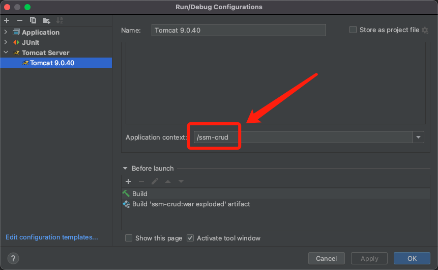
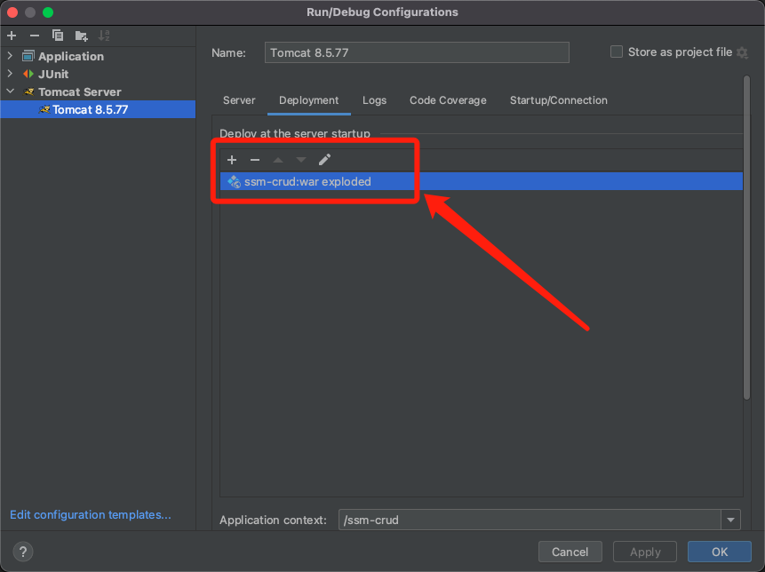
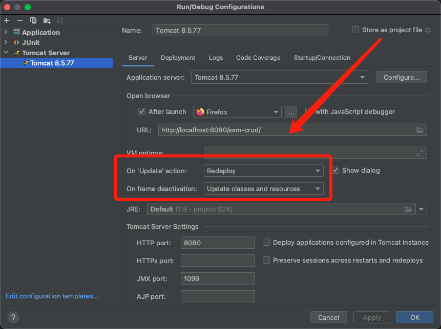
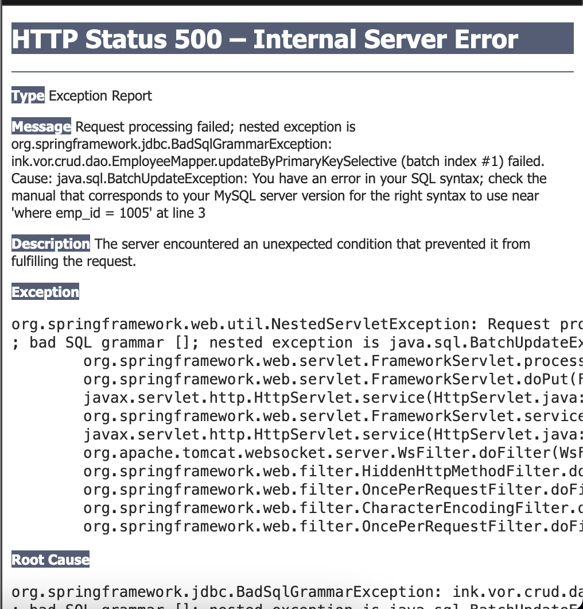

1 运行MyBatis逆向工程无法读取配置文件
2 MyBatis逆向工程无法生成代码
SSM-CRUD项目IDEA使用MyBatis逆向工程生成器时的路径问题
3 使用Spring单元测试注释报错
明明已经加入spring-test依赖，在测试类上使用@ContextConfiguration还是报错，原因是因为从Maven库复制过来时依赖添加了scope为测试范围，但是现在使用的测试类在main路径下，因此直接删除掉scope限定。
<dependency>
<groupId>org.springframework</groupId>
<artifactId>spring-test</artifactId>
<version>5.3.1</version>
<!--<scope>test</scope>-->
</dependency>4 加载Spring配置文件出错
提示找不到context名称空间，原因是因为只加上了xmlns:context，没有在xsi:schemaLocation里面增加相应的地址，正确写法：
<beans xmlns="http://www.springframework.org/schema/beans"
xmlns:xsi="http://www.w3.org/2001/XMLSchema-instance"
xmlns:context="http://www.springframework.org/schema/context"
xmlns:aop="http://www.springframework.org/schema/aop"
xmlns:tx="http://www.springframework.org/schema/tx"
xsi:schemaLocation="http://www.springframework.org/schema/beans
http://www.springframework.org/schema/beans/spring-beans.xsd
http://www.springframework.org/schema/context
http://www.springframework.org/schema/context/spring-context.xsd
http://www.springframework.org/schema/aop
http://www.springframework.org/schema/aop/spring-aop.xsd
http://www.springframework.org/schema/tx
http://www.springframework.org/schema/tx/spring-tx.xsd
">然而还是提示找不到aop，发现原来没有导入依赖，重新在pom中加上：
<dependency>
<groupId>org.springframework</groupId>
<artifactId>spring-aspects</artifactId>
<version>5.3.1</version>
</dependency>5 日志报错

还是缺少依赖，在pom中添加依赖，注意删除scrope：
<dependency>
<groupId>org.slf4j</groupId>
<artifactId>slf4j-log4j12</artifactId>
<version>1.7.16</version>
<!--<scope>test</scope>-->
</dependency>还有警告，显示找不到log4j的配置文件：

手动编写log4j.properties，并放到resources目录下。
## Set root logger level to DEBUG and its only appender to A1.
#log4j.rootLogger=DEBUG, A1
#
## A1 is set to be a ConsoleAppender.
#log4j.appender.A1=org.apache.log4j.ConsoleAppender
#
## A1 uses PatternLayout.
#log4j.appender.A1.layout=org.apache.log4j.PatternLayout
#log4j.appender.A1.layout.ConversionPattern=%-4r [%t] %-5p %c %x - %m%n
log4j.rootLogger=WARN, stdout
log4j.appender.stdout=org.apache.log4j.ConsoleAppender
log4j.appender.stdout.layout=org.apache.log4j.PatternLayout
log4j.appender.stdout.layout.ConversionPattern=%d %p [%c] - %m%n参考No appenders could be found for logger(log4j)?和Spring测试时的LOG4J警告，前一个配置会在控制台输出所有日志信息，有点太多了，所以用了第二个。
6 PageInfo获取查询列表并打印的方式
// 获取员工数据
List<Employee> emps = pageInfo.getList();
// Method 1
System.out.println(emps);
// Method 2
System.out.println(Arrays.toString(emps.toArray()));
// Method 3
for (Employee e: emps) {
System.out.println(e.getEmpName());
}输出为：
Page{count=true, pageNum=1, pageSize=5, startRow=0, endRow=5, total=1000, pages=200, reasonable=false, pageSizeZero=false}
[ink.vor.crud.pojo.Employee@b18c4, ink.vor.crud.pojo.Employee@4cbf4f53, ink.vor.crud.pojo.Employee@597f48df, ink.vor.crud.pojo.Employee@15dd5ac2, ink.vor.crud.pojo.Employee@4d48bd85]
41bb80
47f191
ef9072
b9d6b3
8c38c4- 输出了当前的分页信息，这些信息被封装在PageInfo中，在直接打印对象时内部做了输出处理。
- 输出了查询结果即5个员工的对象的 class 名称 + @ + hashCode 的十六进制字符串，显而易见这是Object类的toString方法，因为我们没有在Employee类中重写toString。
- 输出了每个员工的姓名。
7 启动Tomcat访问主页404
启动Tomcat想要预览主页效果，结果发现一直报404错误。
404错误原因是找不到目标资源，那么问题就出在路径上。
- 检查Tomcat配置发现上下文路径和启动URL不一致。

解决办法：都改为ssm-crud。
- 没有对应的Controller来响应对根目录
/的请求。
解决办法1：在dispatcherServlet-servlet.xml中配置。
<mvc:view-controller path="/" view-name="index" />解决办法2：新建Controller。
@Controller
public class IndexController {
@RequestMapping("/")
public String index() {
return "index";
}
}8 项目的热部署问题
这个问题困扰了我一晚上，经过多番探索才找到产生原因和解决办法。
起因是在进行前端页面编写的时候，发现无法在Tomcat启动情况下通过刷新页面来查看最新的修改，也即热部署无法生效。所谓热部署，就是在应用正在运行的时候升级软件，却不需要重新启动应用。
首先确定Tomcat的设置没有问题：
Deployement这里一定要用exploded，如果使用war包的非展开形式，则改动都得重新打包才能生效。

设置On frame deactivation为Update classes and resources，意思是在光标离开界面时，IDEA将自动更新类和资源文件：
- 在Run启动下，修改java文件无法热部署，但修改静态资源文件（html，css，js等）可以刷新页面立即生效；
- 在Debug启动下，修改java文件和静态资源文件都能在IDEA自动重新部署后生效。

重头戏来了，即使在确认Tomcat的配置没有问题并且更换好几个版本Tomcat后依然无法实现热部署。奇怪的是，对java文件的修改则能立即生效，比如在Controller里加一个输出语句，立马刷新页面重新发送请求，控制台就会有输出，但是html页面的修改仍然始终无法刷新生效，只能重启Tomcat重新部署才能起作用。
继续探索发现，新建一个原生的Java Web项目，不使用任何框架，html页面的热加载是生效的；在当前SSM项目下，直接在webapp下新建html页面，通过URL访问，修改也是可以刷新页面立即生效。
基本确定，这个现象不是由IDEA或者Tomcat导致的，而是使用Thymeleaf视图解析器带来的。
搜索得到的信息是，Thymeleaf includes caching that can be used to cache templates, fragments, messages, and expressions.
每一次发送的请求都经过Controller响应，然后由Thymeleaf的解析，加上视图前缀后缀然后返回给客户端，这样一来这些页面（templates）就被缓存起来了，下一次发送同样的请求，得到的还是之前缓存的页面，而不是刚刚修改后的新页面。
在没有SpringBoot的SSM整合项目中，解决办法是在SpringMVC的配置文件dispatcherServlet-servlet.xml中配置试图解析器templateResolver的地方增加：
<property name="cacheable" value="false"/>如果是SpringBoot项目，好像是在application.properties中添加：
spring.thymeleaf.cache=false之后如果做SpringBoot整合Thymeleaf的前后端不分离项目，可以再回来验证。
9 AJAX发送PUT请求500
在使用RESTful风格做增删改查时，AJAX发送PUT请求来更新员工信息出现500错误。
$.ajax({
url:"emp/"+ $(this).attr("edit-id"),
type:"PUT",
data:$("#empUpdateModal form").serialize(),
success:function(result){
//alert(result.msg);
//1、关闭对话框
$("#empUpdateModal").modal("hide");
//2、回到本页面
to_page(currentPage);
}
});@RequestMapping(value = "/emp/{empId}", method = RequestMethod.PUT)
@ResponseBody
public Msg updateEmp(Employee employee) {
employeeService.updateEmp(employee);
return Msg.success();
}
解决方法1：改用POST请求+_method参数方式
之前在做表单提交的时候，因为提交方法只能使用GET或POST，因此SpringMVC提供的解决办法是加上一个隐藏域中的参数_method，在提交方式依然为POST情况下，将_method的值设为PUT或DELETE，SpringMVC就会为我们寻找对应方法的控制器。
$.ajax({
url:"emp/"+ $(this).attr("edit-id"),
type:"POST",
data:$("#empUpdateModal form").serialize() + "&_method=PUT",
success:function(result){
//alert(result.msg);
//1、关闭对话框
$("#empUpdateModal").modal("hide");
//2、回到本页面
to_page(currentPage);
}
});解决方法2：仍然使用PUT请求+FormContentFilter过滤器
细究上一个方法，会发现很不合理：明明使用AJAX可以发送PUT请求，为什么要求我前端更改请求方式？这个500错误难道不是你后端导致的吗？
事实确实如此，对于PUT请求响应的是500错误，意味着这个请求已经被正确定位到了相应的处理控制器，那异常是怎么产生的呢？
调试发现，在对应该PUT请求的控制器中参数employee没有被封装，即要更新的员工信息根本没有拿到，因此service的对应方法无法正确执行，何以如此？
正常情况下，Tomcat对于一个POST请求会通过request.getParameter("empName")拿到其中的请求参数并封装成一个map，但是查看Tomcat底层源码发现，对于PUT请求，Tomcat不会封装请求体中的数据为map，相当于根本没有去拿请求参数。
org.apache.catalina.connector.Request--parseParameters() (3111)
protected String parseBodyMethods = "POST";
if( !getConnector().isParseBodyMethod(getMethod()) ) {
success = true;
return;
}对于这个问题，SpringMVC提供了一个过滤器FormContentFilter，将其配置在web.xml中后这个过滤器会重新包装 request，实现对PUT、PATCH和DELETE方法过来的请求数据解析封装。
<filter>
<filter-name>FormContentFilter</filter-name>
<filter-class>org.springframework.web.filter.FormContentFilter</filter-class>
</filter>
<filter-mapping>
<filter-name>FormContentFilter</filter-name>
<url-pattern>/*</url-pattern>
</filter-mapping>最后更新： 2023年01月01日 21:30
原始链接： http://muquanrui.com/2022/02/17/Programming/Java%20Project/SSM-CRUD%20bug%E8%AE%B0%E5%BD%95/